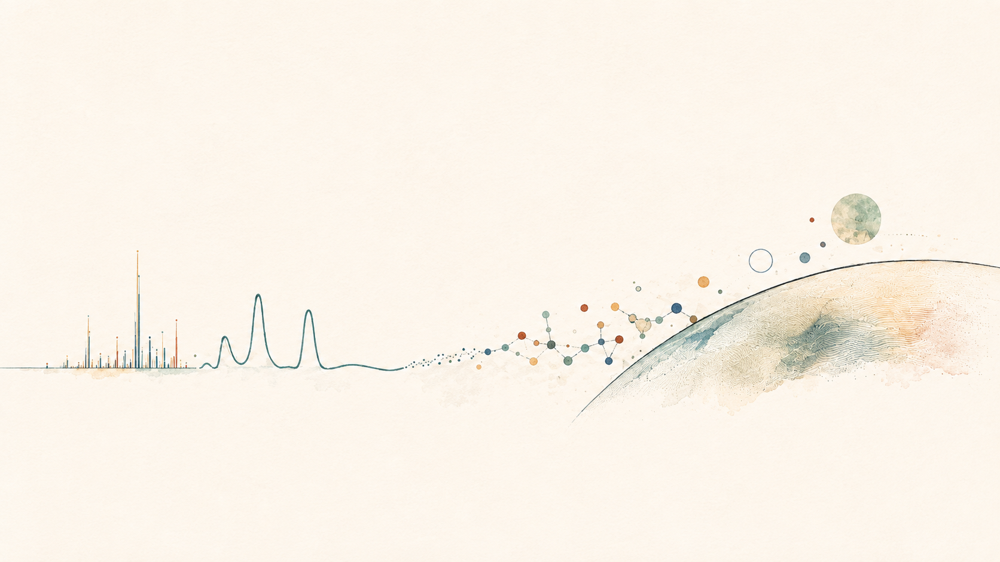

Science Advances
View publication ↗
Analytical Chemistry · Molecular Diagnostics · Astrobiology
Sachindra Gamage, Ph.D.
Analytical tools for molecular detection—from precision medicine on Earth to the search for life beyond it.
I am an analytical chemist interested in developing and applying sensitive technologies for molecular detection in complex samples. My research spans biomedical diagnostics and astrobiology—two areas that share a fundamental analytical challenge: finding meaningful molecular signals within chemically and biologically complex environments.
I draw on micro- and nanofluidics, separation science, mass spectrometry, molecular sensing, and computational analysis to address these challenges. My current work in biosignature detection, omics, and bioinformatics is expanding this analytical toolkit, while my background in liquid biopsy and molecular diagnostics continues to shape my long-term interests in precision medicine and point-of-care technologies.
